In diesem Programmbereich können bestehende Vorlage editiert oder neue Vorlagen definiert werden.
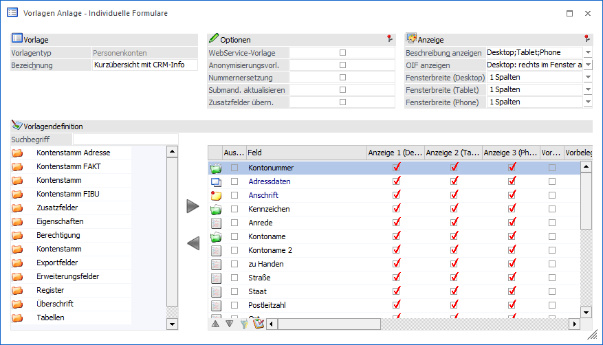
Im oberen Bereich sind die Basiseinstellungen der Vorlage zu finden. Darunter kann die Vorlage im Bereich "Vorlagendefinition" gestaltet werden.
Vorlage
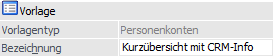
Ø Vorlagentyp
An dieser Stelle wird der Typ der Vorlage angezeigt, d.h. in welchem Programmbereich der WinLine sie eingesetzt werden kann.
Ø Bezeichnung
Hier kann der Name der Vorlage eingetragen werden.
Hinweis
Bei der Neuanlage einer Vorlage kann durch Drücken der F9-Taste eine bestehende Vorlage kopiert werden.

Optionen
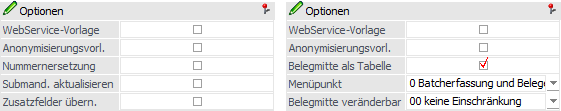
In diesem Bereich können diverse wichtige Einstellungen hinterlegt werden. Die folgenden Optionen werden dabei im Kapitel Vorlagen des Typs "Bewegungsdaten - Belege" beschrieben:
ü Belegmitte als Tabelle
ü Menüpunkt
ü Belegmitte veränderbar
Ø WebService-Vorlage
Wenn diese Checkbox aktiviert wird, so kann die Vorlage beim Export/Import mit WebServices verwendet werden. Zusätzlich kann die Vorlage auch in den EXIM-Fenstern (EXIM Stammdaten, Buchungsstapel-EXIM, Batchbeleg) mit ODBC-Treiberoption "97 XML (Webservice)" verwendet werden. Darüber hinaus kann eine so definierte Vorlage auch im "HTML-Editor" eingebunden werden.
Ø Anonymisierungsvorlage
Wenn dieser Option aktiviert ist, dann kann die Vorlage auch für Anonymisierungsvorgänge verwendet werden (siehe auch Kapitel "Anonymisierung").
Ø Nummernersetzung
Diese Einstellung kann nur gewählt werden, wenn es sich um eine Vorlage der Art "Individuelles Formular" handelt und folgenden Vorlagentyp entspricht:
ü Stammdaten - Personenkonten
ü Stammdaten - Interessenten
ü Stammdaten - Kontakte
ü Bewegungsdaten - CRM
Durch die Aktivierung von "Nummernersetzung" wird nach Eingabe einer Nummer anstatt der Nummer (Kontonummern, Interessentennummer oder Kontaktnummer) der Name des Datensatzes im Eingabefeld angezeigt.
Beispiel - Personenkontenstamm
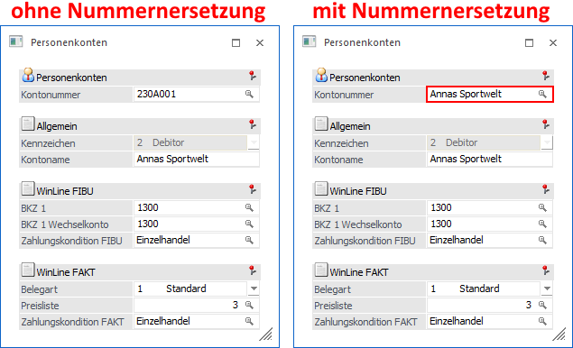
Ø Submandant aktualisieren
Diese Option steht nur bei "individuellen Formularen" des Bereichs "Stammdaten" zur Verfügung. Damit kann gesteuert werden, dass Datensätze, die mit dieser Vorlage bearbeitet werden, auch auf die SUB-Mandanten "kopiert" werden, d.h. die Änderungen werden auch auf die hinterlegten SUB-Mandanten übertragen.
Hinweis
Diese Funktion kann nur genutzt werden, wenn das Programm "Konzernkonsolidierung" lizenziert ist.
Ø Zusatzfelder übernehmen
Diese Option steht nur bei Vorlage aus dem Bereich "Stammdaten" zur Verfügung. Durch Aktivierung der Checkbox werden beim Kopieren von Stammdaten (Taste F9) auch die Zusatz- und Eigenschaftsfelder übernommen.
Anzeige
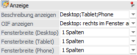
Ø Beschreibung anzeigen
Diese Option kann nur dann ausgewählt werden, wenn es sich bei der Vorlage um ein "Individuelles Formular" handelt. Sie bewirkt, dass neben den Eingabefeldern, die einen Matchcode enthalten, das Ergebnis präsentiert wird. In den Beschreibungsfeldern besteht die gleiche Möglichkeit wie in vielen Formularen direkt in verschiedene Fenster zu wechseln (mit der rechten Maustaste wählbar).
Beispiel - Personenkontenstamm
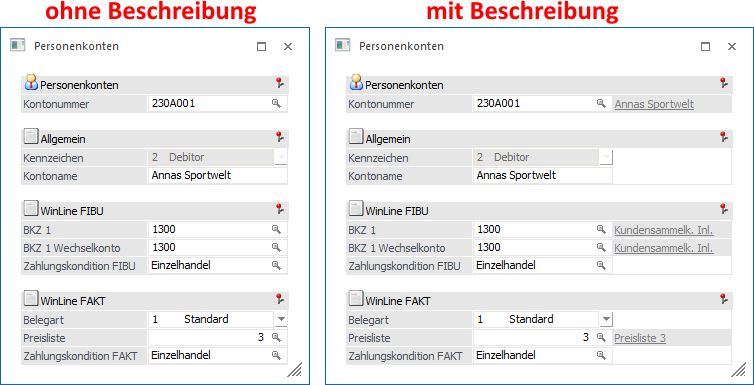
Hinweis
In der WinLine mobile wird aufgrund der platzsparenden Anzeige die Beschreibung immer angezeigt.
Ø OIF anzeigen
Handelt es sich um eine Vorlage der Art "Individuelles Formular" kann mit Hilfe dieser Option im rechten Bereich oder unterhalb des Formulars ein sogenanntes OIF (Objektorientiertes Info-Formular) ausgegeben werden (pro Endgerät separat zu definieren). Dieses zeigt spezifische Informationen zum gerade aktiven Datensatz an, wobei die anzuzeigenden Informationen über eine Formularanpassung individualisiert werden können.
Achtung
Wenn die Option in der Vorlage aktiviert wurde, dann kann während der Verwenden der Vorlage das OIF durch den Button "OIF anzeigen" jederzeit deaktiviert werden. Diese Einstellung wird dann aber nicht benutzerspezifisch gespeichert.
Beispiel - Personenkontenstamm
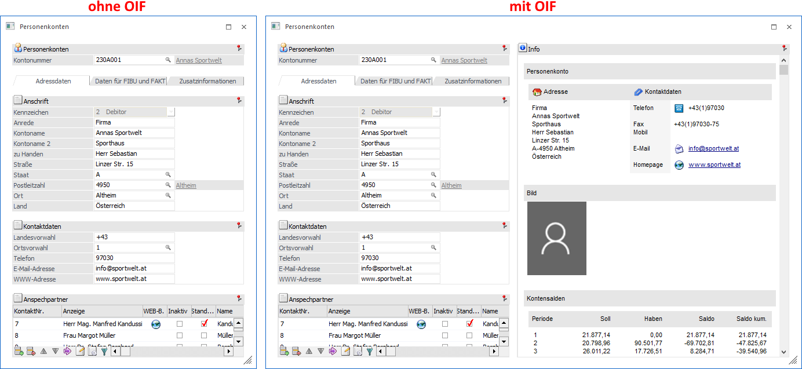
Hinweis - OIF-Formularanpassung
Je Vorlagentyp wird ein Standardformular im OIF-Bereich dargestellt:
ü Stammdaten Personenkonten - P99W504OIF
ü Stammdaten Sachkonten - P99W527OIF
ü Stammdaten Interessenten - P99W528OIF
ü Stammdaten Artikel - P99W529OIF
ü Stammdaten Kontakte - P99W572OIF
ü Stammdaten Projekte - P99W638OIF
ü Bewegungsdaten Belege (Programm "Belege erfassen") - P99W625OIF
ü Bewegungsdaten Belege (Programm "Batcherfassung von Belegen") - P99W570OIF
ü Bewegungsdaten CRM - P99W520OIF
Für jede Vorlage kann aber auch ein Alternativformular verwendet werden, wobei an den Standardnamen Vxxx (xxx => Vorlagennummer) angehängt werden muss.
Beispiel
P99W504OIFV15 - dieses Formular wird für die Personenkontenvorlage mit der Nr. 15 verwendet.
Ø Fensterbreite
Der Punkt "Fensterbreite" kann nur bei "individuellen Formularen" bearbeitet werden. Über diese Einstellung wird pro Endgerät gesteuert, wie breit das geöffnete Fenster sein soll, wodurch wiederum die Eingabefelder breiter dargestellt werden. Zur Auswahl stehen hierfür:
ü 0 - automatisch
Die
Fensterbreite orientiert sich an dem größten Eintrag (Spalte "Spalten") aus der
Definitionstabelle.
ü 1 bis 4 - Spalten
Die
Fensterbreite wird gemäß der gewählten Einstellung dargestellt. Hierbei darf der
größte Eintrag (Spalte "Spalten") aus der Definitionstabelle nicht
unterschritten werden.
Vorlagendefinition
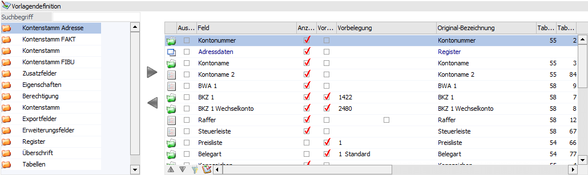
In dem Bereich der Vorlagendefinition können die benötigten Felder der Vorlage zugewiesen werden. Hierzu stehen, je nach Vorlagentyp und Vorlagenart, unterschiedliche Datenbereiche in der linken Datenfelder-Tabelle zur Verfügung. Sonderfelder u.a. der Typen "CRM" und "Belege" werden in dem Kapitel Exkurs detailliert beschrieben.
Tabelle "Datenfelder"
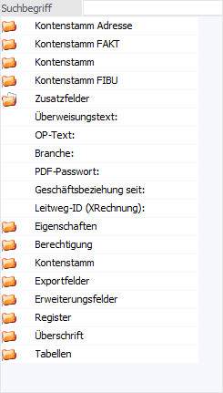
Ø Suchbegriff
An dieser Stelle kann durch die Eingabe und Bestätigung eines Suchbegriffs in den zur Verfügung gestellten Datenbereichen nach passenden Einträgen gesucht werden. Durch das Entfernen und Bestätigen des (leeren) Suchbegriffs werden wieder alle Einträge in der Datentabelle angezeigt.
Hinweis
Es handelt sich hierbei um eine Volltextsuche, d.h. durch die Eingabe von "leit" würde das Feld "Postleitzahl" gefunden werden.
Ø Tabelle "Datenfelder"
Je nach Vorlagentyp und Vorlagenart werden in der Tabelle
unterschiedliche Datenbereiche zur Verfügung gestellt. Durch die Anwahl des
Ordnersymbols  können die Bereiche
geöffnet und Felder in die Definitionstabelle übernommen werden.
können die Bereiche
geöffnet und Felder in die Definitionstabelle übernommen werden.
Die Übernahme eines Felds erfolgt per "Enter", "Doppelklick",
"Drag & Drop" oder durch das Icon  .
Soll ein Feld wieder entfernt werden soll, dann muss das Icon
.
Soll ein Feld wieder entfernt werden soll, dann muss das Icon  angewählt werden.
angewählt werden.
Hinweis
Sobald ein Feld übernommen wurde, wird es in der Tabelle "Datenfelder" nicht mehr zur Verfügung gestellt. D.h. jedes Feld kann nur 1x in der Vorlage vorkommen.
Besonderheiten
In der Tabelle werden auch mehrere Bereiche angezeigt, welche für Spezialfälle vorgesehen sind:
ü Exportfelder
Unter den
Exportfeldern werden jene Datenfelder angezeigt, die nur exportiert werden
können (Kontensalden, Lagerstände, etc.). Diese Felder können nur dann verwendet
werden, wenn die Vorlage zum Export von Daten dienen soll.
ü Platzhalter
Platzhalter werden
nur für den Import von Daten verwendet, wenn sich z.B. in der zu importierenden
Datei ein Feld befindet, das nicht importiert werden kann bzw. soll.
ü Register
Bei der Vorlagenart
"Individuelles Formular" können die Felder der Vorlage in Register unterteilt
werden, damit die Erfassungsmaske übersichtlicher wird. Durch einen Doppelklick
wird das Register auf die rechte Seite übernommen, wo die Bezeichnung verändert
werden kann, wobei diese Bezeichnung als Registername verwendet wird.
ü Tabellen
Bei der Vorlagenart
"Individuelles Formular" können bei bestimmten Vorlagentypen komplette Tabellen
(z.B. eine Ansprechpartnertabelle, eine Beziehungstabelle oder eine
XRM-Tabelle), in die Vorlage integriert werden.
ü Erweiterungsfelder
Die
Erweiterungsfelder sind frei zu definierende Eingabefeld. Diese wurden
grundsätzlich für das WinLine PDMS konzipiert und werden dort automatisch
angezeigt. Wenn diese Felder in einer anderweitig genutzten Vorlage zum Einsatz
kommen, so stehen diese generell bei der Erfassung zur Verfügung, wobei die
Speicherung in einem sogenannten "XML-Rucksack" stattfindet.
Per WinLine LIST
oder anderen WinLine Standard-Auswertungen kann auf diese Daten nicht
zugegriffen werden!
Tabelle "Datenfelder der Vorlage"
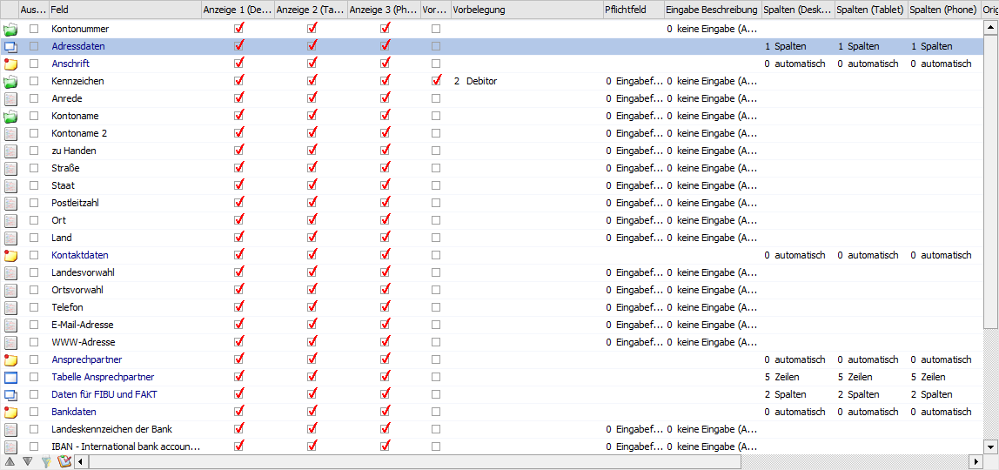
In der Tabelle "Datenfelder der Vorlage" werden jene Felder angezeigt, welche in der Vorlage enthalten sind. Wird eine Vorlage neu angelegt, so werden hier die so genannten "Pflichtfelder" angezeigt.
Hinweis - Pflichtfelder
Es gibt im Stammdatenbereich Felder, die auf jeden Fall entweder vorbelegt oder bei einer Neuanlage eingegeben werden müssen (z.B. "BKZ 1" und "BKZ 1 Wechselkonto" im Kontenstamm). Diese Felder sind bei Aufruf einer neuen Vorlage automatisch mit Häkchen in der Spalte "Anzeige" versehen. Es gibt nun mehrere Möglichkeiten, diese Spalten für die Bearbeitung zu kombinieren.
ü In der ersten Variante wird das Feld für die Bearbeitung gesperrt und der Wert in der Spalte "Vorbelegung" fix vorgegeben. Ansonsten können neu angelegte Konten nicht gespeichert werden.
Beispiel
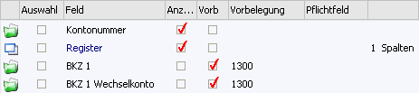
ü Als zweite Variante kann das Feld zur Bearbeitung freigeben werden, den gewünschten Wert aber automatisch vorbelegen. In diesem Fall kann der Wert - falls gewünscht - noch überschreiben werden.
Beispiel
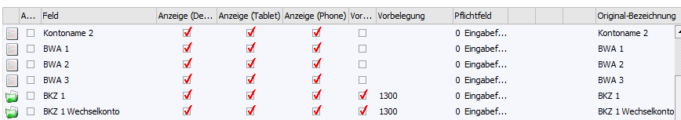
ü Als dritte Variante kann das Datenfeld zur Bearbeitung freigeben und KEINEN Wert vorschlagen werden.
Beispiel
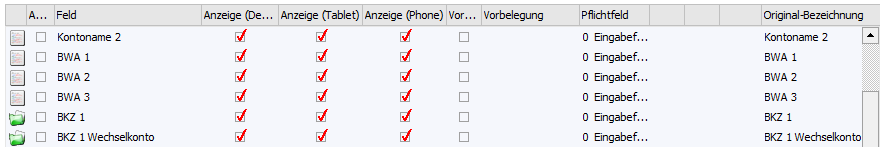
Ø Kennzeichen
In der ersten Spalte wird angezeigt, um welchen Typ von Feld es sich handelt. Dabei gibt es folgende Möglichkeiten:
ü  - Pflichtfeld
- Pflichtfeld
Dieses sind die Felder,
die aus der Vorlage nicht entfernt werden können und immer vorhanden sein
müssen.
ü  - Normales Feld
- Normales Feld
Dieses sind "normale"
Felder, welche der Vorlage hinzugefügt wurden.
ü  - Exportfeld
- Exportfeld
Dieses sind Felder, die nur
zum Export von Daten verwendet werden dürfen.
ü - Platzhalter
Dieses sind Felder, die
z.B. in einer Importdatei vorhanden sind, in der WinLine aber keine Verwendung
finden bzw. benötigt werden.
ü - Register
Wenn Vorlagen auch für das
Erfassen von Daten verwendet werden, dann können die Felder in unterschiedliche
Register aufgeteilt werden. Solche Register werden mit diesem Kennzeichen
dargestellt und können über die Spalte "Feld" betitelt werden.
Zusätzlich
kann in den Spalte "Spalten (xxx)" eingestellt werden, in wieviel Spalten das
Register aufgeteilt werden soll, wobei die Optionen "1 bis 4" zur Verfügung
stehen. Damit kann bestimmt werden, auf wie viele Spalten die nachfolgenden
Felder (bis zum nächsten Register oder Überschrift) aufgeteilt werden sollen.
Die Aufteilung übernimmt das Programm dann automatisch.
ü - Überschrift
Überschriften unterteilen
Felder in Bereiche. Die Beschriftung der Überschrift kann über die Spalte "Feld"
erfolgen.
Zusätzlich kann in den Spalte "Spalten (xxx)" eingestellt werden,
in wieviel Spalten die Felder der Überschrift aufgeteilt werden soll, wobei die
Optionen "0 bis 4" zur Verfügung stehen. Bei der Option "0 - automatisch"
orientiert sich die WinLine an der Einstellung des Registers.
ü - Tabelle
Bei gewissen Vorlagentypen für
individuelle Formulare können Tabellen zur Eingabe von Informationen in die
Vorlage integriert werden (z.B. Ansprechpartner bei Personenkonten). Wenn eine
Tabelle in die Vorlage eingefügt wurde, dann kann in der (letzten) Spalte
"Zeilen" definiert werden, mit wie vielen Zeilen die Tabelle dargestellt werden
soll.
Ø Auswahl
Durch das Setzen der Checkbox können mehrere Einträge, durch
Anwählen des Entfernen-Icons , auf
einmal aus der Tabelle entfernt werden.
Hinweis
Bei Pflichtfeldern kann diese Checkbox nicht gesetzt werden.
Ø Feld
An dieser Stelle wird der Name des Feldes dargestellt und kann editiert werden. Der Originalname kann dabei jederzeit über die Spalte "Original-Bezeichnung" eingesehen werden.
Ø Anzeige (Desktop)
Durch Setzen der Checkbox wird entschieden, ob das Feld später beim Aufruft via CWL oder via WinLine mobile mit der Ansicht Desktop sichtbar ist und damit zur Bearbeitung freigegeben sein soll oder nicht.
Ø Anzeige (Tablet)
Durch Setzen der Checkbox wird entschieden, ob das Feld später via WinLine mobile mit der Ansicht Tablet sichtbar ist und damit zur Bearbeitung freigegeben sein soll oder nicht.
Ø Anzeige (Phone)
Durch Setzen der Checkbox wird entschieden, ob das Feld später via WinLine mobile mit der Ansicht Phone sichtbar ist und damit zur Bearbeitung freigegeben sein soll oder nicht.
Ø Vorbelegen
Durch Aktivierung der Checkbox kann eine Vorbelegung (siehe Feld "Vorbelegung") hinterlegt werden.
Ø Vorbelegung
In diesem Feld kann durch Eingabe eines Textes oder Wertes das entsprechende Datenfeld für die Bearbeitung vorbelegen werden.
Hinweis
Die u.a. für die Typen "CRM" und "Belege" bestehenden Sondereinstellungen können dem Kapitel Exkurs entnommen werden.
Ø Pflichtfeld
Diese Option steht nur bei "individuellen Formularen" zur Verfügung. Damit kann gesteuert werden, wie das Feld im Fenster behandelt werden soll, wobei es 4 verschiedene Möglichkeiten gibt:
ü 0 - Eingabefeld
Es handelt sich
um ein normales Eingabefeld.
ü 1 - Nur-Lese-Feld
Der Inhalt
des Feldes wird angezeigt, das Feld darf aber nicht bearbeitet werden - das Feld
wird "gegrayed".
ü 2 - Pflichtfeld (muss aufgesucht
werden)
Das Feld muss einmal den Focus erhalten haben. Hierbei erfolgt keine
Prüfung, ob das Feld auch ausgefüllt wurde (außer bei den Feldern, die vom
Programm her einen Wert haben müssen). Diese Felder werden im Formular gelb
hinterlegt dargestellt. Beim Speichern wird geprüft, ob auch wirklich alle
Felder aufgesucht wurden.
ü 3 - Pflichtfeld (darf nicht leer
bleiben)
Das Feld muss einen Wert hinterlegt haben, sonst kann der Datensatz
nicht gespeichert werden.
Hinweis
Diese Auswahl steht für alle aktiven (Option "Anzeigen" aktiviert), importierbaren Stammdatenfelder, Zusatzfelder, Eigenschaften und die Berechtigung zur Verfügung. Für alle anderen Feldtypen (Platzhalter, Register, Tabellen, ...) kann in diesem Feld nichts eingegeben werden.
Ø Eingabe Beschreibung
Die "Eingabe Beschreibung" wurde grundsätzlich für "Erweiterungsfelder" konzipiert, welche wiederum ein Bestandteil des WinLine PDMS sind.
Wird diese Option in anderweitig genutzten Vorlage aktiviert, so kann neben dem Eingabefeld eine weitere Inforation erfasst werden, wobei der Typ der Eingabe hier definiert werden kann.
Achtung
Die Speicherung dieser Informationen findet in einem sogenannten "XML-Rucksack" stattfindet. Per WinLine LIST oder anderen WinLine Standard-Auswertungen kann auf diese Daten nicht zugegriffen werden!
Ø Spalten / Zeilen / Datum
Je nach Feld kann in dieser Spalte eingestellt werden…
ü … wie viel Spalten das Register erhalten soll.
ü … wie viel Spalten die Überschrift erhalten soll.
ü … wie viel Zeile die Tabelle erhalten soll.
ü … ob es sich um ein Datumsfeld mit oder ohne Uhrzeit handelt.
Ø Original-Bezeichnung
In dieser Spalte wird die originale Feld-Bezeichnung lt. WinLine angezeigt.
Ø Tabelle / Tabellenspalte
In diesen Spalten wird angezeigt, in welcher Tabelle und Spalte sich das Feld in der Datenbank befindet.
Ø AI-Frage
Hier wird, sofern vorhanden, eine AI-Frage angezeigt. Durch einen Doppelklick auf die Spalte wird - sofern für dieses Feld eine AI-Frage erlaubt ist - im unteren Bereich ein Feld geöffnet, wo die AI-Frage eingetragen werden kann.
Tabellenbuttons
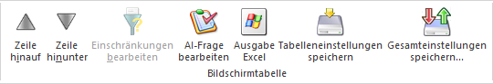
Ø Zeile hinauf / Zeile hinunter
Mit diesen Buttons können Felder innerhalb der Vorlage verschoben werden, wobei dieses auch per Drag & Drop möglich ist.
Ø Einschränkungen bearbeiten
Wird dieser Button aktiviert (kann nur bei Export/Import-Vorlagen des Vorlagentyps "Stammdaten" erfolgen), dann können Einschränkungen (über 2 neu eingeblendete Spalten) für das Programm "Stammdaten editieren" vorgenommen werden.
Beispiel
Wird z.B. das Feld "Preisliste" mit einer Einschränkung 1 bis 2 belegt, so erhält man eine entsprechende Meldung, wenn ein Wert außerhalb des eingeschränkten Bereiches (1-2) Feld eingetragen wird.
Ø AI-Frage bearbeiten
Dieser Button steht nur bei Vorlagen der Typen "Personenkonten", "Artikel" und "CRM" und bei folgenden Feldtypen zur Verfügung:
ü Import/Exportfelder
ü Eigenschaften
ü Berechtigung
ü Erweiterungsfelder
Wird der Button aktiviert, wird ein weiteres Eingabefeld
Ø AI-Frage bearbeiten
geöffnet. Hier kann eine Frage hinterlegt werden, die MesoAI im Zuge des Imports von Daten ausführen und das Ergebnis in das entsprechende Feld übernehmen soll.
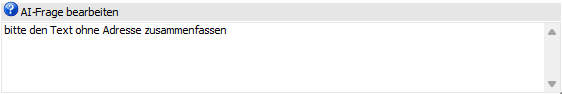
Sobald der Text bestätigt wird, wird dieser in die Spalte AI-Frage in der Tabelle übernommen. Durch einen weiteren Klick auf den Button wird das Feld wieder geschlossen.
Ø Ausgabe Excel
Durch Anwahl des Buttons "Ausgabe Excel" wird der Inhalt der Tabelle an Microsoft Excel übergeben.
Ø Tabelleneinstellungen speichern
Die Spalten einer Tabelle können grundsätzlich an beliebige Positionen verschoben, bzw. in der Breite entsprechend angepasst werden. Durch Anwahl des Buttons "Tabelleneinstellungen speichern" werden die Einstellungen benutzerspezifisch gespeichert und bei dem nächsten Aufruf des Programmpunktes wieder vorgeschlagen.
Ø Gesamteinstellungen speichern
Im Gegensatz zu "Tabelleneinstellungen speichern" können mit "Gesamteinstellungen speichern" mehrere Tabellenaufbauten gespeichert und nach Wunsch geladen werden. Zusätzlich werden Sonderfunktionen der Tabelle (z.B. "Spalte gruppieren") ebenfalls bei der Speicherung bedacht.